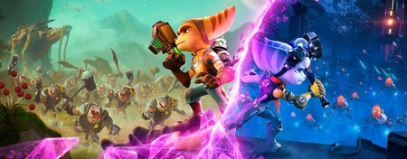
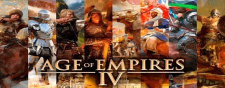
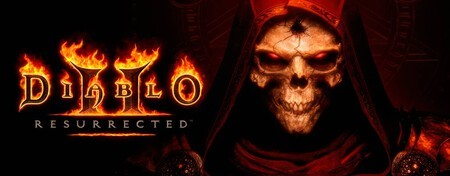

Nuestra lista comienza con el regreso del Lombax más querido del universo. De hecho, era el único que quedaba hasta que las dimensiones decidieron cruzarse y Rivet apareció en el camino. Ratchet & Clank: Una Dimensión Aparte es una demostración de que Insomniac Games es capaz de ofrecernos pura aventura en la nueva generación de Sony.
Muchos rogaban, suplicaban por la llegada de una nueva entrega de la mítica franquicia. Age of Empires IV llegó para satisfacer todas las peticiones y con todas las civilizaciones ha conquistado a los usuarios. Si la estrategia debe ser abanderada por alguna saga, pocas dudas de que Age of Empires la llevaría bien en alto.
Han pasado 20 años desde que nos enganchamos sin remedio a la pantalla del ordenador y algunas costuras todavía se notan, pero no nos engañemos: Diablo II Resurrected es la perfecta puesta a punto que merecía la que posiblemente sea la joya de la corona de la marca. Una de esas obras que está claramente contraindicada para la buena productividad.

n

n

n
Lost Judgment
Kena: Bridge of Spirits
Resident Evil Village
El estudio Ryu Ga Gotoku celebró su décimo aniversario firmando uno de sus mejores juegos hasta la fecha, y eso son palabras mayores. Lost Judgment, la secuela de Judgment, retoma la exitosa fórmula de acción callejera de Yakuza añadiendo nuevos matices a sus temáticas adultas a través de mecánicas de sigilo e investigación. Y sí, los minijuegos y los clásicos de SEGA completan y hacen más entretenido un título redondo.
Precioso y desafiante, Kena: Bridge of Spirits ha sido una de las grandes apuestas de PlayStation en 2021. Un juego de acción, exploración y aventuras que nos ha dejado un muy buen sabor de boca. A nivel visual, además, es maravilloso. Ojo porque tiene unos picos de dificultad en ciertos jefes finales que no los ves venir.
A Capcom le salió muy bien la jugada con Resident Evil 7 al regresar a sus raíces con un auténtico survival horror que apostó por un punto de vista en primera persona, de ahí que haya escogido el mismo tipo de jugabilidad con Resident Evil Village. Ethan Winters repite el papel de protagonista en una emocionante aventura de acción con momentos de lo más terroríficos y que nos ha dejado con villanos tan emblemáticos como Lady Dimitrescu.